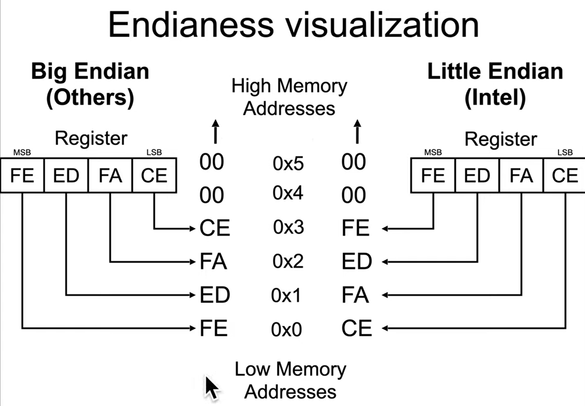

- Endianess only applies to memory storage (not registers!)
- Registers store only in Big-Endian order
- Endianess only applies to bytes (not bits!)
little endianess - the little end / least significant byte, will be stored in the lowest address (little end first)
0x12345678 will be stored as 0x78 0x56 0x34 0x12
big endianess - store the big end / most significant byte in the lowest memory address (big end first)
0x12345678 will be stored as 0x12 0x34 0x56 0x78
network trafic is sent in big endian (man byteorder in linux to see POSIX network-to-host ordering functions)
RISC systems today are mostly Bi-Endian
